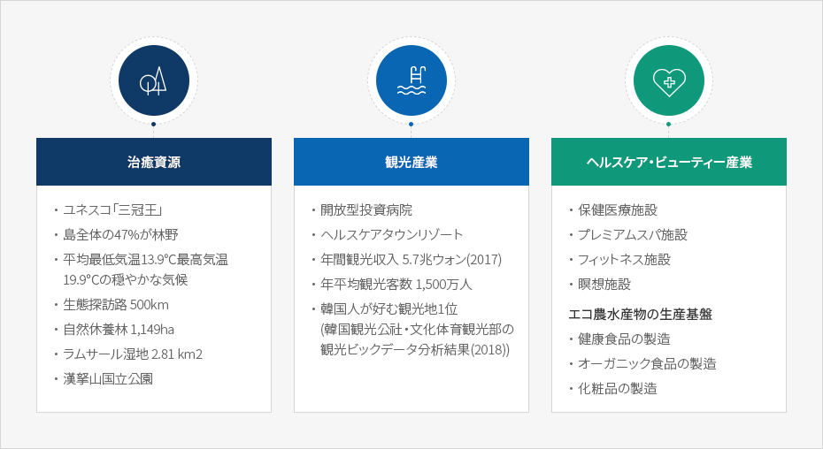
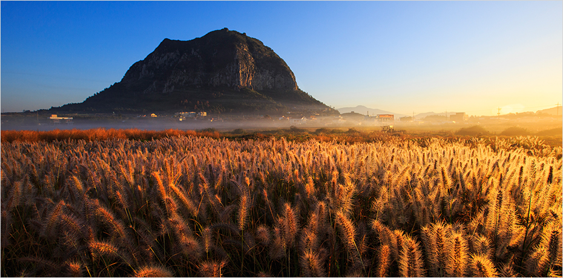
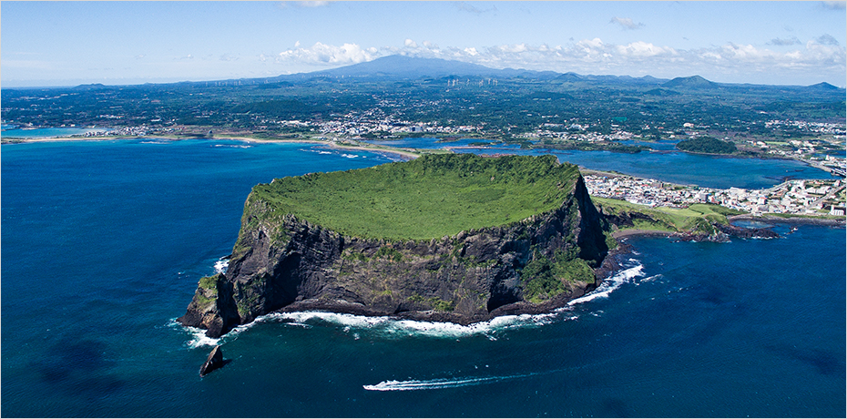
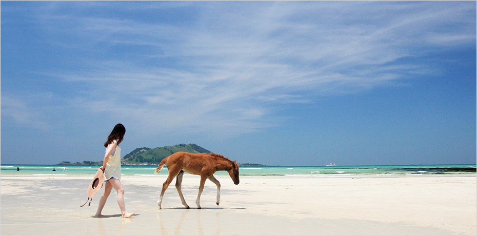

ウェルネス
- Home
- 投資環境
- 未来の有望産業
- ウェルネス


ストレスや多様な疾病に露出しやすい現代人はヒーリングと健康に対する関心が日増しに高くなっており、全世界のウェルネス市場の規模とバリューも持続的に増加しています。
済州はきれいな自然環境と優秀な観光インフラを基盤に、高品質な医療サービス、森の治癒、ビューティーとアンチエイジング、美容とスパ、ヒーリングと瞑想、フィットネスとレジャーなどすぐれた施設を構築しており、第1次産業を基盤にした食材料の生産と加工産業も発達しています。
韓国の消費者の健康なライフスタイルをリードしている済州は、アジア最大のシルバー市場とヘルスケア市場を有する中国、日本からも1時間の距離に位置しておりウェルネスツーリズム産業投資の最適地です。
なお、済州は済州特別自治道特別法に基づき、外国人が設立した法人が医療機関を開設することが許容される地域で、JDCが造成中の西帰浦市に位置するヘルスケアタウン「ヒーリングヒルズ」は世界的な複合医療観光団地を目標にして投資を誘致しています。
ストレス緩和や疾病の治癒、情緒の安定を提供する済州のウェルネス資源は健康とヒーリングを求める全世界の人々に最高の経験を提供します。


済州の付加価値を向上させる医療と休養関連産業


-
治癒資源
- ユネスコ「三冠王」
- 島全体の47%が林野
- 平均最低気温13.9℃最高気温19.9℃の穏やかな気候
- 生態探訪路 500km
- 自然休養林 1,149ha
- ラムサール湿地 2.81 km2
- 漢拏山国立公園
-
観光産業
- 開放型投資病院
- ヘルスケアタウンリゾート
- 年間観光収入 5.7兆ウォン(2017)
- 年平均観光客数 1,500万人
- 韓国人が好む観光地1位(韓国観光公社・文化体育観光部の観光ビックデータ分析結果(2018))
-
ヘルスケア・ビューティー産業
- 保健医療施設
- プレミアムスパ施設
- フィットネス施設
- 瞑想施設
- エコ農水産物の生産基盤(健康食品の製造, オーガニック食品の製造, 化粧品の製造)

済州のウェルネス資源

-
国立公園 １
153.332 ㎢[ホームページ]https://www.jeju.go.kr/hallasan/index.htm -
道立公園 １
1,546,757 ㎢[ホームページ]http://jejugotjawal.or.kr/ -
済州ジオパーク名所サイト
13

-
自然休養林 4
1,085 ㏊ -
生態森 1
194 ㏊ -
治癒の森 1 (Seogwipo Healing Forest)
174 ㏊

-
- 海洋道立公園 4
180.74 ㎢[ホームページ]http://jejugotjawal.or.kr/
http://www.jeju.go.kr/dorip/chuja.htm
http://www.jeju.go.kr/dorip/mara.htm
http://www.jeju.go.kr/dorip/seongsan.htm

-
海水浴場
10